File: 000270.gt.txt (if the image is defective, simply delete all Arabic text and the line will be excluded)
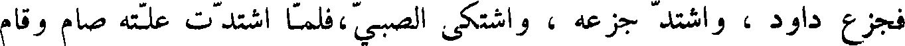
فجزع داود ، واشتد جزعه ، واشتكى الصبي ، فلما اشتدت علته صام وقام
File: 000271.gt.txt (if the image is defective, simply delete all Arabic text and the line will be excluded)
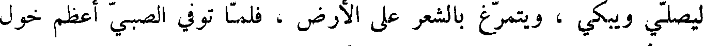
ليصلي ويبكي ، ويتمرغ بالشعر على الأرض ، فلما توفي الصبي اعظم خول
File: 000272.gt.txt (if the image is defective, simply delete all Arabic text and the line will be excluded)
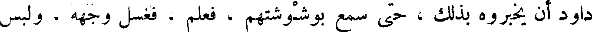
داود أن يخبروه ، بذلك حتى سمع بوشوشتهم ، فعلم ، فغسل وجهه ، ولبس
File: 000273.gt.txt (if the image is defective, simply delete all Arabic text and the line will be excluded)
ثيابه ، وجلس في مجلسه، ودعا بطعامه، وقال : إنما كنت احزن قبل أن يهلك،
File: 000274.gt.txt (if the image is defective, simply delete all Arabic text and the line will be excluded)
فأما الساعة ، فأن خزني لا يرده إلي بل أنا اذهب إليه . ثم واقع برسبا ، فحملت
File: 000275.gt.txt (if the image is defective, simply delete all Arabic text and the line will be excluded)
غلاما ، فسماه سليمان .
File: 000276.gt.txt (if the image is defective, simply delete all Arabic text and the line will be excluded)
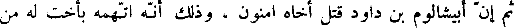
ثم إن ابيشالوم ببن داود قتل أخاه امنون ، وذلك انه اتهمه بأخت له من
File: 000277.gt.txt (if the image is defective, simply delete all Arabic text and the line will be excluded)
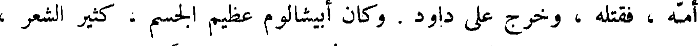
أمه ، فقتله ، وخرج على داود . وكان ابيشالوم عظيم الجسم ، كثير الشعر ،
File: 000278.gt.txt (if the image is defective, simply delete all Arabic text and the line will be excluded)
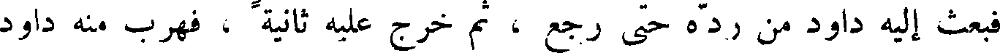
فبعث إليه داود من رده حتى رجع ، ثم خرج عليه ثانية ، فهرب منه داود
File: 000279.gt.txt (if the image is defective, simply delete all Arabic text and the line will be excluded)
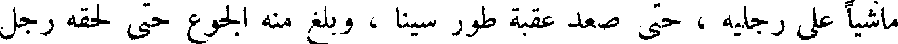
ماشيا على رجليه ، حتى صعد عقبة طور سينا ، وبلغ منه الجوع حتى لحقه رجل
File: 000280.gt.txt (if the image is defective, simply delete all Arabic text and the line will be excluded)
معه خبز وزيت ، فأكل منه ؛ ودخل ابيشالوم مدينة أبيه ، وصار إلى داره
File: 000281.gt.txt (if the image is defective, simply delete all Arabic text and the line will be excluded)
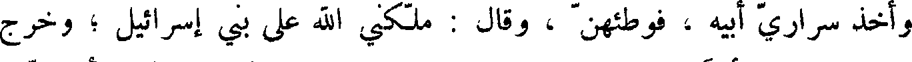
واخذ سراري أبيه ، فوطئعمن ، وقال : ملكني الله على بني إسرائيل ؛ وخرج
File: 000282.gt.txt (if the image is defective, simply delete all Arabic text and the line will be excluded)
ومعه اثنا عشر ألفا ، فطلب داود ليقتله ، فهرب داود حتى جاز نهر الأردن ،
File: 000283.gt.txt (if the image is defective, simply delete all Arabic text and the line will be excluded)
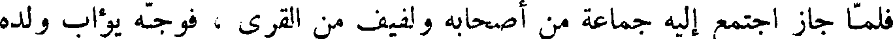
فلما جاز اجتمع إليه جماعة من أصحابه ولفيف من القرى ، فوجه يؤاب ولده
File: 000284.gt.txt (if the image is defective, simply delete all Arabic text and the line will be excluded)
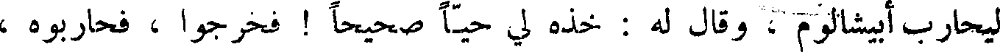
ليحارب ابيشالوم ، وقال له : خذه لي حيا صحيحا ! فخرجوا ، فحاربوه ،
File: 000285.gt.txt (if the image is defective, simply delete all Arabic text and the line will be excluded)
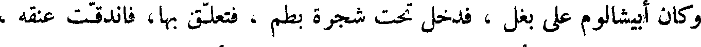
وكان أبيشالوم على بغل ، فدخل تحت شجرة بطم ، فتعلق بها ، فاندقت عنقه ،
File: 000286.gt.txt (if the image is defective, simply delete all Arabic text and the line will be excluded)
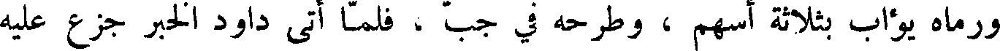
ورماه يؤاب بثلاثة اسهم ، وطرحه في جب ، فلما أتى داود الخبر جزع بعليه
File: 000287.gt.txt (if the image is defective, simply delete all Arabic text and the line will be excluded)
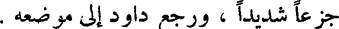
جزعا شديدا ، ورجع داود إلى موضعه .
File: 000288.gt.txt (if the image is defective, simply delete all Arabic text and the line will be excluded)
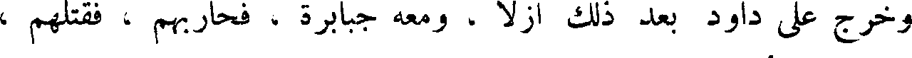
وخرج على داود بعد ذلك أزلا ، ومعه جبابرة ، فحاربهم ، فقتلهم ،
File: 000289.gt.txt (if the image is defective, simply delete all Arabic text and the line will be excluded)
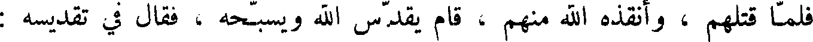
فلما قتلهم ، وأنقذه الله منهم ، قام يقدس الله ويسبحه ، فقال في تقديسه :
File: 000290.gt.txt (if the image is defective, simply delete all Arabic text and the line will be excluded)
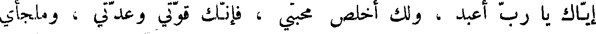
إياك يا رب اعبد ، ولك أخلص محبي ، فانك قوتي وعدتي ، وملجأي
File: 000291.gt.txt (if the image is defective, simply delete all Arabic text and the line will be excluded)
أرفخشد بن سام
File: 000292.gt.txt (if the image is defective, simply delete all Arabic text and the line will be excluded)
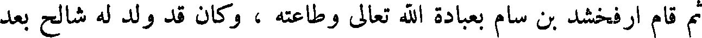
ثم قام ارفخشد بن سام بعبادة الله تعالى وطاعته ، وكان قد ولد له شالح بعد
File: 000293.gt.txt (if the image is defective, simply delete all Arabic text and the line will be excluded)
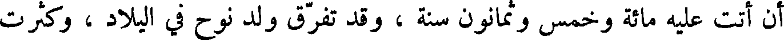
أن أتت عليه مائة وخمس وثمانون سنة ، وقد تفرق ولد نوح في البلاد ، وكثرت
File: 000294.gt.txt (if the image is defective, simply delete all Arabic text and the line will be excluded)
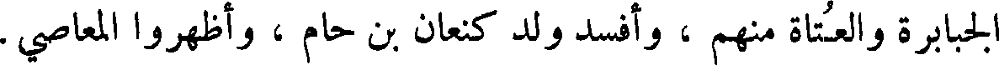
الجبابرة والعتاة منهم ، وافسد ولد كنعان بن حام ، واظهروا المعاصي.
File: 000295.gt.txt (if the image is defective, simply delete all Arabic text and the line will be excluded)
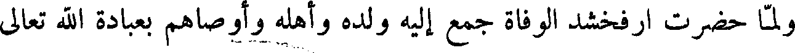
ولما حضرت ارفخشد الوفاة جمع إليه ولده وأهله وأوصاهم بعبادة الله تعالى
File: 000296.gt.txt (if the image is defective, simply delete all Arabic text and the line will be excluded)
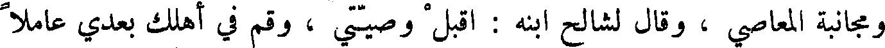
ومجانبة المعاصي ، وقال لشالح ابنه : اقبل وصيتي ، وقم في اهلك بعدي عاملا
File: 000297.gt.txt (if the image is defective, simply delete all Arabic text and the line will be excluded)
بطاعة الله تعالى . ومات يوم الأحد لسبع بقين من نيسان ، وكانت حياته أربعمائة
File: 000298.gt.txt (if the image is defective, simply delete all Arabic text and the line will be excluded)
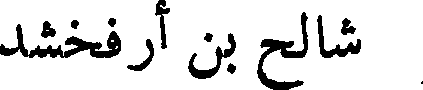
شالح بن ارفخشد
File: 000299.gt.txt (if the image is defective, simply delete all Arabic text and the line will be excluded)
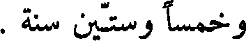
وخمسا وستين سنة .
To Save: `Ctrl+s`, make sure to choose `Webpage, complete`!